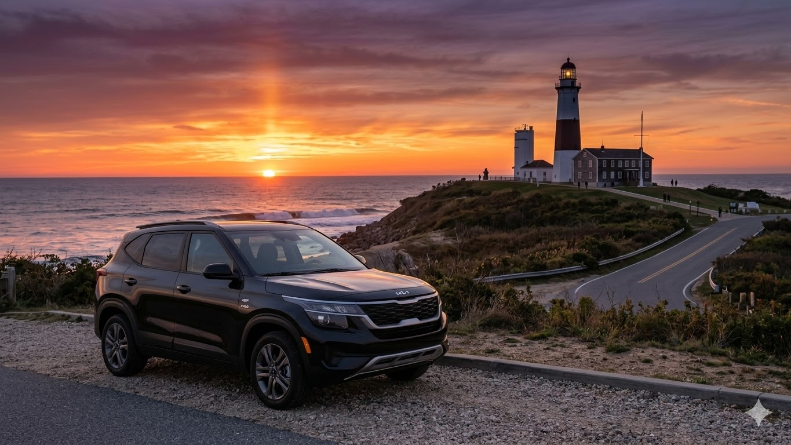

The Drive Behind the Ride
Riding the waves of the future...

A Partnership Built on the Field and the Road
Joe's Rides is led by longtime friends and softball teammates, Joe and Will. As the Owner and Operations Manager, we are the engine that keeps this business afloat, personally ensuring that every client receives a premium experience. With over 250 loyal clients, our success is built on the trust we've developed through years of teamwork, both on the field and behind the wheel.
We specialize in precision transportation for the most demanding terminals in the world. Whether it’s a curbside pickup at **JFK International**, navigating **LaGuardia**, or serving **Newark** and **Westchester**, we bring a level of local expertise that only comes from decades of professional driving.
Elite Hub Mastery
Unmatched expertise in high-traffic Tri-State terminals including JFK, LGA, EWR, and Westchester (HPN).
Teamster Standards
Years of Local 802 Union experience hauling heavy loads ensures our commitment to safety and logistics is ironclad.
8,000+ Trip Veteran
Our background includes extensive airport logistics, from Tampa shuttle operations to thousands of private Tri-State bookings.